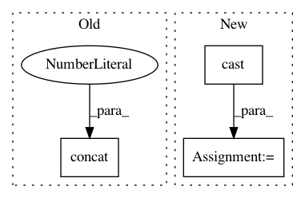

f9b98760f445fc0219cfc9c4cada2b5f9d35ab1b,basic/model.py,Model,_build_loss,#Model#,219
Before Change
if config.wy:
if config.na:
na = tf.reshape(self.na, [-1, 1])
concat_y = tf.concat(1, [na, tf.reshape(self.wy, [-1, M * JX])])
losses = tf.nn.softmax_cross_entropy_with_logits(self.concat_logits, tf.cast(concat_y, "float"))
else:
losses = tf.nn.softmax_cross_entropy_with_logits(
self.logits2, tf.cast(tf.reshape(self.wy, [-1, M * JX]), "float"))
After Change
num_neg = tf.reduce_sum(tf.cast(self.x_mask, "float")) - num_pos
damp_ratio = num_pos / num_neg
dampened_losses = losses * (
(tf.cast(self.x_mask, "float") - tf.cast(self.wy, "float")) * damp_ratio + tf.cast(self.wy, "float"))
new_losses = tf.reduce_sum(dampened_losses, [1, 2])
ce_loss = tf.reduce_mean(loss_mask * new_losses)
if config.na:
na = tf.reshape(self.na, [-1, 1])
In pattern: SUPERPATTERN
Frequency: 3
Non-data size: 3
Instances
Project Name: wenwei202/iss-rnns
Commit Name: f9b98760f445fc0219cfc9c4cada2b5f9d35ab1b
Time: 2017-01-24
Author: seominjoon@gmail.com
File Name: basic/model.py
Class Name: Model
Method Name: _build_loss
Project Name: reinforceio/tensorforce
Commit Name: d1ae17e7f6a0916add0d2b4521acab3fbb42650e
Time: 2020-03-08
Author: alexkuhnle@t-online.de
File Name: tensorforce/core/models/model.py
Class Name: Model
Method Name: tf_initialize
Project Name: tensorflow/models
Commit Name: 5e854f25098ca40a4ac80197607bf883feaeb375
Time: 2018-02-13
Author: lzc@google.com
File Name: research/object_detection/utils/learning_schedules.py
Class Name:
Method Name: manual_stepping